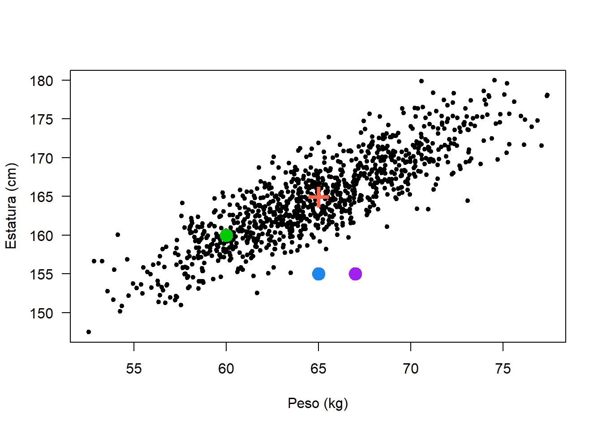
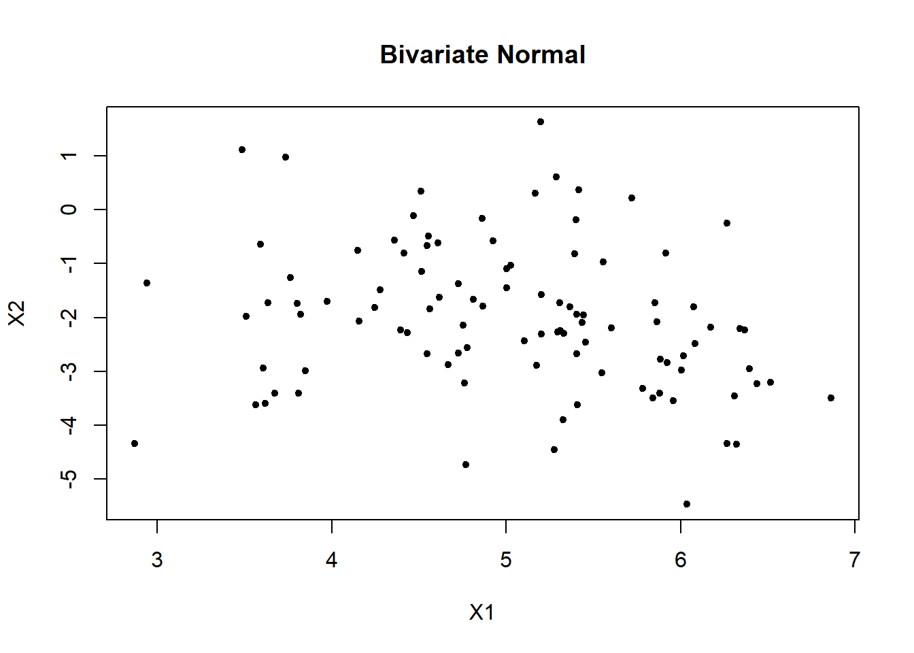

27 Distribución normal multivariada
En este capítulo se mostrarán aspectos importantes de la distribución normal multivariada.
27.1 Función de densidad
En la densidad Normal \(p\)-variada, hay dos parámetros, \(\boldsymbol{\mu}\) y \(\boldsymbol{\Sigma}\). El primero es un vector de columna \(p \times 1\) de parámetros de localización y una \(p \times p\) matriz de dispersión \(\boldsymbol{\Sigma}\). La función de densidad de una normal multivariada es la siguiente:
\[\begin{equation} f(\mathbf{x} | \boldsymbol{\mu}, \boldsymbol{\Sigma}) =\frac{1}{\sqrt{(2\pi)^{p}|\boldsymbol{\Sigma}|}} \exp \left( -\frac{1}{2}(\mathbf{x}-\boldsymbol{\mu})^\top\boldsymbol{\Sigma}^{-1}(\mathbf{x}-\boldsymbol{\mu}) \right) \end{equation}\]
El símbolo \(|\boldsymbol{\Sigma}|\) se refiere al determinante de la matriz \(\boldsymbol{\Sigma}\). Esta ecuación asume que \(\boldsymbol{\Sigma}\) se puede invertir, y una condición suficiente para la existencia de una inversa es que el determinante no sea \(0\). La matriz \(\boldsymbol{\Sigma}\) debe ser semidefinida positiva para asegurar que el punto más probable es \(\boldsymbol{\mu}\) y que, a medida que \(\mathbf{x}\) se aleja de \(\boldsymbol{\mu}\) en cualquier dirección, entonces la probabilidad de observar \(\mathbf{x}\) disminuye.
Ejemplo
Dibujar la superficie de una normal bivariada para las variables Peso y Estatura con vector de medias \(\boldsymbol{\mu}^\top=(65, 165)\) y matriz de varianzas/covarianzas
\[ \boldsymbol{\Sigma}= \begin{pmatrix} 20 & 11 \\ 11 & 30 \end{pmatrix} \]
Solución
Para crear una superficie de una normal bivariada se puede usar el siguiente código. La función dmvnorm del paquete mvtnorm (Genz et al. 2023) sirve para obtener la densidad de cada punto.
library(mvtnorm)
mu <- c(65, 165)
Sigma <- matrix(c(20, 11,
11, 30), nrow=2 , byrow = TRUE)
N <- 50
Peso <- seq(from=40, to=85, length.out=N)
Estatura <- seq(from=145, to=185, length.out=N)
densidad_curva <- function(x1, x2) dmvnorm(cbind(x1, x2), mean=mu, sigma=Sigma)
probX <- outer(Peso, Estatura, FUN="densidad_curva")
persp(Peso, Estatura, probX, theta=45, phi=20,
xlab="Peso",ylab="Estatura", zlab="", ticktype="detailed", nticks=4, col="khaki1")Figure 27.1: Densidad de una normal bivariada.
Ejemplo
Calcular la densidad dos personas \(A=(60, 160)\) y \(B=(80, 170)\) asumiendo distribución normal bivariada con vector de medias \(\boldsymbol{\mu}^\top=(65, 165)\) y matriz de varianzas/covarianzas
\[ \boldsymbol{\Sigma}= \begin{pmatrix} 20 & 11 \\ 11 & 30 \end{pmatrix} \]
Solución
Para calcular los valores de densidad de las dos personas hacemos lo siguiente:
library(mvtnorm)
mu <- c(65, 165)
Sigma <- matrix(c(20, 11,
11, 30), nrow=2 , byrow = TRUE)
dmvnorm(c(60, 160), mean=mu, sigma=Sigma) # Para A## [1] 0.003502017## [1] 2.103677e-05
27.2 Simulando de una normal multivariada
Para simular de una normal multivariada se puede usar la función mvrnorm del paquete MASS (Ripley 2024) o la función rmvnorm del paquete mvtnorm (Genz et al. 2023).
Ejemplo
Simular cien observaciones de pesos y estaturas y luego construir un diagrama de dispersión. Asuma que las variables tiene distribución normal bivariada con un vector de medias \(\boldsymbol{\mu}^\top=(65, 165)\) y matriz de varianzas/covarianzas
\[ \boldsymbol{\Sigma}= \begin{pmatrix} 20 & 11 \\ 11 & 30 \end{pmatrix} \]
Solución
Para hacer lo solicitado se puede usar el siguiente código.
require(mvtnorm)
mu <- c(65, 165)
Sigma <- matrix(c(20, 11,
11, 30), ncol=2, nrow=2)
n <- 100
datos <- rmvnorm(n=n, mean=mu, sigma=Sigma)
plot(datos, xlab="Peso [kg]", ylab="Estatura [cm]", pch=19, las=1)
points(x=mu[1], y=mu[2], lwd=3, col="tomato", pch=3)
Figure 27.2: Diagrama de dispersión para datos simulados de una normal bivariada.
Ejemplo
Usando los datos simulados construya un diagrama de dispersión usando el paquete plotly.
Solución
library(mvtnorm)
library(plotly)
density <- dmvnorm(datos, mean=mu, sigma=Sigma)
plot_ly(x=~datos[,1], y=~datos[,2], z=~density,
type = "scatter3d", color=density)Figure 27.3: Densidad para los datos simulados de una normal bivariada usando plotly.
Ejemplo
Usando los datos simulados construya un diagrama de dispersión usando el paquete scatterplot3d.
Solución
library(scatterplot3d)
scatterplot3d(x=datos[,1], y=datos[,2], z=density, pch=16, cex.lab=1,
highlight.3d=TRUE, type="h", xlab="Peso",
ylab="Estatura", zlab="Densidad")
Figure 27.4: Densidad para los datos simulados de una normal bivariada usando scatterplot3d.
27.3 Calculando probabilidades
La función pmvnorm del paquete mvtnorm sirve para calcular probabilidades. Este enlace lo llevará a la página oficial del paquete donde se puede encontrar una viñeta con información sobre el cálculo de probabilidades.
Ejemplo
Para el ejemplo de el peso y la estatura calcular la siguiente probabilidad.
\[ P(-\infty < Peso \leq 60, -\infty < Estatura \leq 160) \]
Solución
Para hacer lo solicitado se puede usar el siguiente código.
library(mvtnorm)
mu <- c(65, 165)
Sigma <- matrix(c(20, 11,
11, 30), ncol=2, nrow=2)
pmvnorm(mean=mu, sigma=Sigma,
lower=c(-Inf, -Inf), upper=c(60, 160))## [1] 0.05520382
## attr(,"error")
## [1] 1e-15
## attr(,"msg")
## [1] "Normal Completion"De la salida anterior tenemos que \(P(-\infty < Peso \leq 60, -\infty < Estatura \leq 160)=0.05520382\).
27.4 Distancia de Mahalanobis
Si \(\mathbf{X}\) se distribuye \(N_p(\boldsymbol{\mu}, \boldsymbol{\Sigma})\), la distancia de Mahalanobis se define como
\[ D^2 = (\mathbf{x}-\boldsymbol{\mu})^\top\boldsymbol{\Sigma}^{-1}(\mathbf{x}-\boldsymbol{\mu}) \]
y \(D^2 \sim \chi^2_p\).
Ejemplo
Simular 1000 observaciones de una normal multivariada con vector de medias \(\boldsymbol{\mu}^\top=(65, 165)\) y matriz de varianzas/covarianzas
\[
\boldsymbol{\Sigma}=
\begin{pmatrix}
20 & 21 \\
21 & 30
\end{pmatrix}
\]
- Calcular la distancia de Mahalanobis para las personas \(A=(60, 160)\), \(B=(65, 155)\) y \(C=(67, 155)\).
- Explorar la distribución de las distancias \(D^2\).
Solución
Vamos a simular unos datos con el siguiente código.
require(MASS)
set.seed(1974)
n <- 1000
centro <- c(65, 165)
Sigma <- matrix(c(20, 21,
21, 30), ncol=2, nrow=2)
dt <- mvrnorm(n=n, mu=centro, Sigma=Sigma)
# ploting
plot(dt, xlab='Peso (kg)', ylab='Estatura (cm)', pch=20,
#xlim=c(55, 75), ylim=c(140, 190),
las=1)
points(x=centro[1], y=centro[2], pch='+', col='tomato', cex=3)
points(x=60, y=160, pch=20, col='green3', cex=3)
points(x=65, y=155, pch=20, col='dodgerblue2', cex=3)
points(x=67, y=155, pch=20, col='purple', cex=3)
Vamos a calcular las distancias \(D^2\) con la función mahalanobis.
new_data <- data.frame(x1=c(60, 65, 70),
x2=c(160, 155, 155))
mahalanobis(x=new_data, center=centro, cov=Sigma)## [1] 1.257862 12.578616 30.503145Vamos a calcular las distancias \(D^2\) con la función mahalanobis.
Construyamos un qqplot sencillo para explorar la distribución de las distancias \(D^2\).
Mejoremos la figura anterior así:

## [1] 514 508Apliquemos ahora una prueba para estudiar \(H_0:\) las \(D^2\) tienen distribución \(\chi^2_p\) versus \(H_1:\) las \(D^2\) NO provienen de una distribución \(\chi^2_p\).
Primero hagamos un histograma para \(D^2\) (con \(k=5\) intervalos o breaks) y luego le superponemos la densidad de \(\chi^2_p\).
hist(d2, breaks=5, freq=FALSE, las=1, ylim=c(0, 0.50))
curve(expr=dchisq(x, df=2), add=TRUE, col="tomato", lwd=2)
Para hacer la prueba de hipótesis hacemos lo siguiente:
## $breaks
## [1] 0 2 4 6 8 10 12 14
##
## $counts
## [1] 604 245 96 39 10 4 2
##
## $density
## [1] 0.3020 0.1225 0.0480 0.0195 0.0050 0.0020 0.0010
##
## $mids
## [1] 1 3 5 7 9 11 13
##
## $xname
## [1] "d2"
##
## $equidist
## [1] TRUE
##
## attr(,"class")
## [1] "histogram"Ahora vamos a calcular las probabilidades esperadas de cada cajón asumiendo que \(H_0\) es verdadera, es decir, que las distancias se distribuyen \(\chi^2_p\).
null_probs <- pchisq(q=h$breaks, df=2) # Prob acumul hasta cada lim_sup del cajon
null_probs <- diff(null_probs) # Prob esperadas de cada cajonAhora si aplicamos la prueba.
##
## Chi-squared test for given probabilities with simulated p-value (based
## on 2000 replicates)
##
## data: h$counts
## X-squared = 5.3409, df = NA, p-value = 0.5067Nota: para más detalles de esta prueba consultar https://www.r-bloggers.com/goodness-of-fit-test-in-r/
27.5 Ellipse o contornos de confianza
Los contornos de densidad constante para la distribución normal de \(p\) dimensiones son elipsoides definidos por \(\mathbf{x}\) tales que
\[ (\mathbf{x}-\boldsymbol{\mu})^\top\boldsymbol{\Sigma}^{-1}(\mathbf{x}-\boldsymbol{\mu}) = c^2 \] Los elipsoides están centrandos en \(\boldsymbol{\mu}\) y tienen ejes \(\pm c \sqrt{\lambda_i} \boldsymbol{e}_i\). El valor de \(c^2\) se obtiene como el cuantil \(D^2 \sim \chi_p\) de manera que la cola a izquierda tenga un valor de cierto porcentaje (85%, 90%, 93%, 95%, …).
Ejemplo
Crear dos contornos o elipses de 50% y 90% para una normal multivariada con vector de medias \(\boldsymbol{\mu}^\top=(65, 165)\) y matriz de varianzas/covarianzas
\[ \boldsymbol{\Sigma}= \begin{pmatrix} 20 & 21 \\ 21 & 30 \end{pmatrix} \]
Solución
Vamos a usar el siguiente código.
# Mean vector and covariance matrix
centro <- c(65, 165)
Sigma <- matrix(c(20, 21,
21, 30), ncol=2, nrow=2)
# To plot the ellipses
plot(x=NULL, y=NULL, xlab='Peso (kg)', ylab='Estatura (cm)',
xlim=c(55, 75), ylim=c(140, 190), las=1)
car::ellipse(center=centro, shape=Sigma, col='tomato', fill=TRUE,
radius=sqrt(qchisq(p=0.90, df=2)))
car::ellipse(center=centro, shape=Sigma, col='blue', fill=TRUE,
radius=sqrt(qchisq(p=0.50, df=2)))
legend('topleft', col=c('blue', 'tomato'), lwd=2, bty='n',
legend=c('50%', '90%'))Ejemplo
Con las características de la distribución bivariada anterior:
- Simule 10 observaciones y haga un diagrama de dispersión.
- Construya una elipse de confianza del 70%.
- Revise si 3 observaciones quedan fuera de la elipse.
- ¿Cuál es el valor de distancia de Mahalanobis para determinar si una observación está fuera de la elipse.
Solución
Vamos a usar el siguiente código.
require(MASS)
set.seed(123)
dt <- mvrnorm(n=10, mu=centro, Sigma=Sigma)
plot(dt, xlab='Peso (kg)', ylab='Estatura (cm)', pch=20,
xlim=c(55, 75), ylim=c(140, 190), las=1)
car::ellipse(center=centro, shape=Sigma, col='blue', fill=TRUE,
radius=sqrt(qchisq(p=0.70, df=2)))
legend('topleft', col=c('blue'), lwd=2, bty='n', legend=c('70%'))Para determinar el valor de \(c\) con el cual se comparan las distancias \(D^2\) y la forma para detectar una observación fuera de la elipse, se puede usar el siguiente código.
## [1] 2.407946## X1 X2 d2 Quedo_fuera
## 1 60.85424 163.3997 1.8125092 FALSE
## 2 63.50457 164.1791 0.1824477 FALSE
## 3 71.01331 173.8077 2.5901894 TRUE
## 4 65.13783 165.5044 0.0172221 FALSE
## 5 66.35279 165.0560 0.3256747 FALSE
## 6 69.66526 176.2324 6.1345065 TRUE
## 7 66.22821 168.0388 0.4602988 FALSE
## 8 62.49907 155.9721 5.4679630 TRUE
## 9 61.07740 162.1242 0.9636669 FALSE
## 10 63.79999 162.0716 0.4221463 FALSE27.6 Estimando los parámetros \(\boldsymbol{\mu}\) y \(\boldsymbol{\Sigma}\)
En esta sección se mostrarán las formas para estimar el vector de media y la matriz de varianzas y covarianzas.
Ejemplo
Simular 100 observacioens para una normal multivariada con vector de medias \(\boldsymbol{\mu}^\top=(5, -2)\) y matriz de varianzas/covarianzas mostrada abajo. Usar varios métodos para obtener la estimación de \(\boldsymbol{\mu}\) y \(\boldsymbol{\Sigma}\).
\[ \boldsymbol{\Sigma}= \begin{pmatrix} 0.87 & -0.5 \\ -0.5 & 2.3 \end{pmatrix} \]
Solución
# Simulate bivariate normal data
mu <- c(5, -2) # Mean
Sigma <- matrix(c(0.87, -0.5,
-0.5, 2.3), ncol=2) # Covariance matrix
# Generate sample from N(mu, Sigma)
library(MASS)
dt <- mvrnorm(100, mu = mu, Sigma = Sigma ) # from Mass package
plot(dt, xlab = "X1", ylab = "X2", pch=20, main = "Bivariate Normal")
Usando el método de máxima verosimilitud.
require(mnormt)
minusll <- function(theta) {
mu1 <- theta[1]
mu2 <- theta[2]
s12 <- theta[3]
s11 <- exp(theta[4]) # Must be positive
s22 <- exp(theta[5]) # Must be positive
Sigma <- matrix(c(s11, s12,
s12, s22), ncol=2)
ll <- sum(dmnorm(x=dt, mean=c(mu1, mu2), varcov=Sigma, log=TRUE))
return(-ll)
}
res <- optim(par=rep(0, 5), fn=minusll, control=list(maxit=10000))
res## $par
## [1] 5.0236352 -2.0085304 -0.2665968 -0.2384307 0.6046184
##
## $value
## [1] 299.5394
##
## $counts
## function gradient
## 1524 NA
##
## $convergence
## [1] 0
##
## $message
## NULLDe la salida anterior tenemos que el valor de log-verosimilitud es -299.5393966 y se necesitaron 1524 pasos de iteración. Para obtener los parámetros estimados en la escala natural hacemos.
## [1] 5.0236352 -2.0085304 -0.2665968 0.7878633 1.8305535De la salida anterior tenemos que el vector \(\boldsymbol{\Theta} = (5.0236, -2.0085, -0.2666, 0.7879, 1.8306)^\top\)
Es posible obtener las estimaciones con la función mlest del paquete mvnmle. Esta función es útil cuando la base de datos tiene NA.
## $muhat
## [1] 5.023751 -2.008617
##
## $sigmahat
## [,1] [,2]
## [1,] 0.7876176 -0.2662931
## [2,] -0.2662931 1.8298479
##
## $value
## [1] 231.5034
##
## $gradient
## [1] -4.921997e-06 -5.433557e-06 1.733724e-06 -1.790568e-06 3.723244e-06
##
## $stop.code
## [1] 1
##
## $iterations
## [1] 5Es posible estimar los parámetros usando funciones básicas.
## [1] 5.023754 -2.008617## [,1] [,2]
## [1,] 0.7955725 -0.2689831
## [2,] -0.2689831 1.8483295## $cov
## [,1] [,2]
## [1,] 0.7955725 -0.2689831
## [2,] -0.2689831 1.8483295
##
## $center
## [1] 5.023754 -2.008617
##
## $n.obs
## [1] 100
##
## $cor
## [,1] [,2]
## [1,] 1.0000000 -0.2218173
## [2,] -0.2218173 1.0000000## $cov
## [,1] [,2]
## [1,] 0.7876168 -0.2662933
## [2,] -0.2662933 1.8298462
##
## $center
## [1] 5.023754 -2.008617
##
## $n.obs
## [1] 100
##
## $cor
## [,1] [,2]
## [1,] 1.0000000 -0.2218173
## [2,] -0.2218173 1.0000000Ejemplo
Use la función mlest del paquete mvnmle para estimar \(\boldsymbol{\mu}\) y \(\boldsymbol{\Sigma}\) de la base de datos apple disponible en mvnmle.
Solución
## size worms
## 1 8 59
## 2 6 58
## 3 11 56
## 4 22 53
## 5 14 50
## 6 17 45
## 7 18 43
## 8 24 42
## 9 19 39
## 10 23 38
## 11 26 30
## 12 40 27
## 13 4 NA
## 14 4 NA
## 15 5 NA
## 16 6 NA
## 17 8 NA
## 18 10 NA## $muhat
## [1] 14.72227 49.33325
##
## $sigmahat
## [,1] [,2]
## [1,] 89.53415 -90.69653
## [2,] -90.69653 114.69470
##
## $value
## [1] 148.435
##
## $gradient
## [1] 4.988478e-06 2.892682e-06 8.726424e-07 1.682947e-05 -1.073488e-04
##
## $stop.code
## [1] 1
##
## $iterations
## [1] 3427.7 Distribución Wishart
En estadística univariada, la distribución \(\chi^2\) juega un papel importante en la inferencia de \(\sigma^2\) cuando se tiene una población \(N(\mu, \sigma^2)\). De un teorema se sabe que
\[ \frac{(n-1) S^2}{\sigma^2} \sim \chi^2_{n-1}, \]
siendo \(S^2=\frac{1}{n-1}\sum_{i=1}^{n}(X_i-\bar{X})^2\).
De forma análoga, la distribución Wishart \(W\) sirve para explicar la distribución de \(\mathbf{S}\) cuando se tienen observaciones de una \(N_p(\boldsymbol{\mu}, \boldsymbol{\Sigma})\). De un teorema se sabe que
\[ (n-1) \mathbf{S} \sim W_p(\boldsymbol{\Sigma}, n), \]
siendo \(\mathbf{S}=\frac{1}{n-1}\sum_{i=1}^{n}(\mathbf{x}_i-\bar{\mathbf{x}}_i) (\mathbf{x}_i-\bar{\mathbf{x}}_i)^\top\).
En esta sección se presenta la distribución Wishart y se muestra que para las variables aleatorias MVN, la matriz de covarianza de la muestra \(\mathbf S\) tiene una distribución Wishart.
Sea \(\mathbf x_1, \ldots, \mathbf x_n\) una muestra aleatoria IID de \(N_p (\boldsymbol 0, \boldsymbol{\Sigma})\). Entonces se dice que \[\mathbf M= \sum_{i=1}^n \mathbf x_i \mathbf x_i^\top \in \mathbb{R}^{p\times p}\] tiene una distribución de Wishart con \(n\) grados de libertad y matriz de escala \(\boldsymbol{\Sigma}\). Escribimos esto como \[\mathbf M\sim W_p(\boldsymbol{\Sigma}, n)\] y nos referimos a \(W_p(\mathbf I_p,n)\) como una distribución estándar de Wishart.
Para generar valores aleatorios de una distribución Wishart se puede usar las función rWISHART.
require(mixAK)
df <- 2
S <- matrix(c(1, 3,
3, 13), nrow=2)
set.seed(123)
print(M <- rWISHART(n=3, df=df, S=S))## (1.1) (2.1) (2.2)
## 1 1.760118 5.704247 18.491330
## 2 1.301754 1.355093 7.644143
## 3 2.866288 7.827009 21.382141Si queremos conocer la densidad de las tres observaciones anteriores usamos lo siguiente.
## [1] 0.0884071408 0.0008949927 0.0290369731Para verificar que cada componente es correcto hacemos lo siguiente.
## (1.1) (2.1) (2.2)
## 1.916637 5.714386 24.726085## [1] 2 6 2627.8 Mezcla de dos normales multivariadas
Un tipo de distribución muy usual en estadística y en aplicaciones es la mezcla de dos normales multivariadas. El caso particular de la mezcla de dos normales bivariadas es más interesante porque se puede dibujar la densidad en 3d.
Si \(\mathbf{X}\) tiene como distribución mezcla de normales bivariadas entonces eso se escribe como:
\[ \mathbf{X} \sim p \, N_2(\boldsymbol{\mu}_1, \boldsymbol{\Sigma}_1) + (1-p) \, N_2(\boldsymbol{\mu}_2, \boldsymbol{\Sigma}_2) \]
Vamos a mostrar la forma de crear la densidad de una mezcla de dos normales bivariadas en el siguiente código.
# Parametros de la mezcla
p <- 0.6
Media1 <- c(-3, -2)
Sigma1 <- matrix(c(2, 1.3,
1.3, 2.5), byrow=TRUE, ncol=2)
Media2 <- c(5, 4)
Sigma2 <- matrix(c(2, -1.1,
-1.1, 2), byrow=TRUE, ncol=2)
# Densidad de la mezcla
mix_den <- function(x1, x2, Media1, Sigma1, Media2, Sigma2, p) {
parte1 <- p * dmvnorm(cbind(x1, x2), mean=Media1, sigma=Sigma1)
parte2 <- (1-p) * dmvnorm(cbind(x1, x2), mean=Media2, sigma=Sigma2)
return(parte1 + parte2)
}
# Para dibujar la densidad
N <- 50
X1 <- seq(from=-10, to=10, length.out=N)
X2 <- seq(from=-10, to=10, length.out=N)
probX <- outer(X1, X2, FUN="mix_den",
Media1=Media1, Sigma1=Sigma1,
Media2=Media2, Sigma2=Sigma2, p=p)
persp(X1, X2, probX, theta=45, phi=20,
xlab="Var 1", ylab="Var 2", zlab="",
ticktype="detailed", nticks=4, col="pink")
De la figura anterior vemos claramente dos montañas porque las medias de ambas normales están separadas. Si las medias estuvieran más cerca la densidad cambiaría. Otra cosa interesante que se observa es el efecto de la covarianza: en la primera normal la covarianza es mayor que cero mientras que en la segunda la covarianza es negativa.
EJERCICIOS
- Simular \(n\) observaciones de una normal multivariada con vector de medias \(\boldsymbol{\mu}^\top=(65, 165)\) y matriz de varianzas/covarianzas
\[ \boldsymbol{\Sigma}= \begin{pmatrix} 20 & 21 \\ 21 & 30 \end{pmatrix} \]
y luego aplicar la prueba chisq.test para determinar si las distancias \(D^2\) siguen una distribución \(\chi^2_p\). Repetir esta operación 100 veces para cada uno de los valores \(n\) de la siguiente tabla. Use \(k=10\) intervalos.
| \(n\) | Porcentaje de veces que NO se rechaza \(H_0\) |
|---|---|
| 10 | |
| 20 | |
| 40 | |
| 80 | |
| 160 |